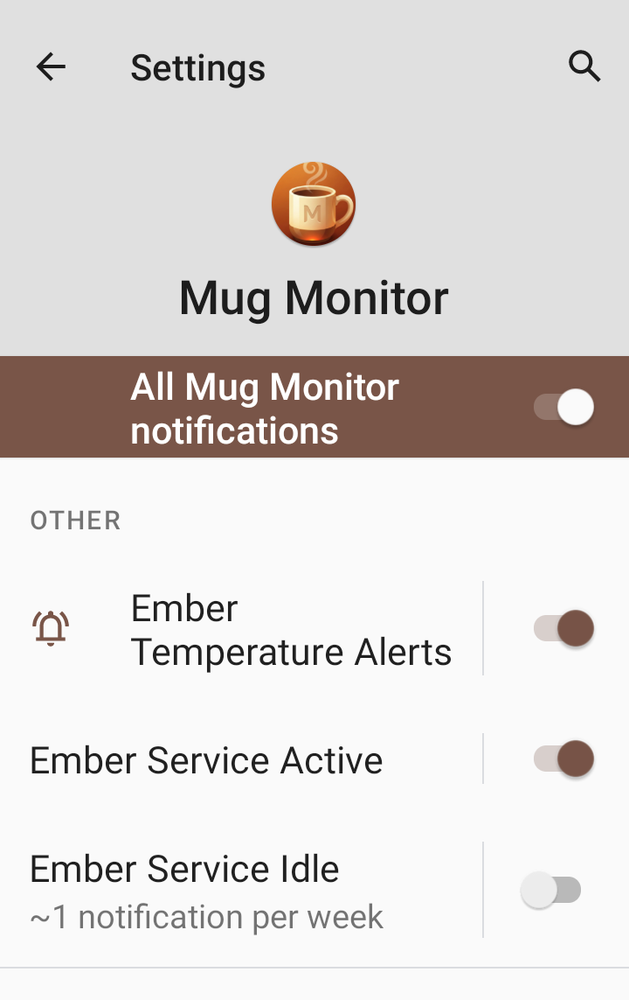

Frequently Asked Questions & Troubleshooting
Independent, unofficial companion app for compatible Ember mugs.
Try these steps in order. A nearby mug can still be unavailable if another phone is connected or it is not advertising for setup.
For automatic recovery, see Background Monitoring and Android wake-up below. Repeatedly resetting a mug is not necessary for ordinary reconnects.
The official Ember app does not need to run alongside Mug Monitor for everyday use. You may still need it for initial authorization on some mugs or firmware updates. If connections conflict, close the official app before reconnecting with Mug Monitor.
Some mugs need initial authorization through the official Ember app before third-party controls work. Connect successfully in the official app, then close it and reconnect in Mug Monitor. If controls are still unavailable, contact app support with your mug model and the exact message; do not keep factory-resetting the mug.
Pairing and resetting are different. Release the button as soon as the pairing indicator appears.
A ceramic mug's factory reset uses a longer hold (about 15 seconds) and a red indicator. It clears the pairing state and requires re-pairing. Use Ember's reset instructions only when simpler troubleshooting has failed. Do not apply ceramic-mug reset timing to a Travel Mug.
A red light alone is not enough to diagnose a battery fault. If the mug will not power on, charge, or enter pairing mode, see Hardware Support below.
On supported phones, Android can wake Mug Monitor and attempt to reconnect when your associated mug appears nearby, including after long idle periods. This is automatic recovery, not a guarantee of an uninterrupted or instant Bluetooth connection.
The reconnect preference is enabled by default for eligible Premium/trial users, but the one-time Android setup still needs your approval. You normally do not need to forget an existing Bluetooth pairing first.
This wake-up feature requires Android 12 or later and the phone manufacturer's Companion Device support. Some older or unsupported phones cannot complete setup. Other available connection methods remain usable; unsupported wake-up does not mean the mug cannot connect manually.
Check Bluetooth, mug power/range, permissions, Premium/trial status, and the setup status in Settings. Another connected phone can block access. Android background restrictions and whether the mug is advertising can delay detection.
Explicit Disconnect is respected: after you disconnect in the app, connect manually again or re-enable the mug's auto-connect option to resume automatic connections. Opening the app again is also necessary after a system Force stop. Ordinary out-of-range or idle disconnections are different from choosing Disconnect.
Turning Automatic background reconnect off disables this recovery feature; it is separate from the Background Monitoring switch.
A stale status can result from a lost connection or Android restricting background work; it does not prove the mug is empty. First open Mug Monitor and check its connection state. If updates repeatedly stop only in the background, try Troubleshoot Disconnects in app Settings, or:
Note: The exact naming of these menus can vary depending on your phone's manufacturer (Samsung, Google, OnePlus, etc.).
Yes. In Mug Monitor Settings, tap Turn Off Idle Notifications (or Idle notification settings) to open Android's controls. Alternatively:
Disable only Ember Service Idle, not all Mug Monitor notifications. Background monitoring can continue; active status and drink alerts use separate channels. Android may still show the service under active apps. Hiding a notification does not disable Android's background restrictions or guarantee the process stays alive.

Note: You will continue seeing the "Empty/Standby" status for approximately 30 minutes even with this setting turned off.
Ready to Drink gives you an earlier cooling alert without changing the mug's heater target. It is off by default. In Settings, under Temperature Alerts, enable Ready to Drink alert (Premium Feature) and choose how far above target you want the alert.
The default is 5°F above target, adjustable from 1-20°F (with equivalent Celsius controls), capped at the app's mug maximum. For a 132°F target and +5°F offset, the ready range is above 132°F through 137°F.
The one-minute confirmation starts when the cooling drink enters that range at 137°F. It must remain in the qualifying range for the minute; moving outside it cancels that pending alert. This helps avoid alerts from brief temperature readings while filling. An alert is not a guarantee that a drink is safe to sip.
Enable Also notify when Perfect (Premium Feature) if you want a second alert at the target. Turning that off does not turn off Ready to Drink.
Alerts are limited to avoid repeated notifications as the temperature drifts. Ready to Drink has a 10-minute cooldown and must also re-arm for a new drink, such as after an idle/refill state or the temperature rising sufficiently above the ready threshold. Simply waiting ten minutes does not generate another alert.
Check Premium/trial access, Background Monitoring, the Ready to Drink switch, notification permissions, and a current mug connection. The drink must cool into and remain in the range for one minute. If the target is already at the app's mug maximum, no higher advance-alert range is available.
Wear OS support requires Premium or an active trial. Install Mug Monitor from the Google Play Store on your watch (look under Apps on your phone or search for it). Enable Background Monitoring and Wear OS on the phone and connect the phone app to your mug. The watch receives its data through the phone; it is not a separate direct connection to the mug.
If watch information is missing or stale, open both apps and check the phone-to-mug and phone-to-watch connections. The ongoing mug indicator can disappear when updates stop; it is not a permanently pinned watch-face icon.
Core foreground mug monitoring and controls remain free. Advanced features such as background monitoring, automatic background reconnect, Ready to Drink alerts, LED pulsing, and Wear OS support require Premium or an active 7-day trial.
When the trial expires without a Premium purchase, Premium features stop; the free core app remains available. Installing an update does not restart an expired trial.
Android Premium is a one-time in-app purchase, not a recurring subscription. Confirm the current price in Google Play before purchasing.
Use the same Google Play account that purchased Premium, install/update Mug Monitor from Google Play, and reopen the app while online so it can check your purchase. If it is still locked, contact support with the app version and order reference, not payment-card details.
There is no recurring Android subscription to cancel. For an eligible purchase, follow Google Play's refund instructions. Eligibility depends on the store's policy; a refund is not guaranteed. Contact app support if you need help with the purchase.
Mug Monitor is an independent third-party app, not Ember's hardware support team. It cannot repair a battery, charging coaster, or a mug that cannot power on or communicate over Bluetooth.
For charging problems, unusual lights, replacement parts, or warranty questions, use official Ember support and your model's instructions. Avoid assuming that every failure to pair is an app issue. For app controls, alerts, or background reconnect problems, contact Mug Monitor below.
If you've tried the steps above and are still having trouble, I'm here to help.
Please include your mug model, phone model, Android version, Mug Monitor version, exact error, and whether another phone is connected. Tell us whether it happens only in the background and what you have tried. A screenshot with personal information removed can help.
Contact Support